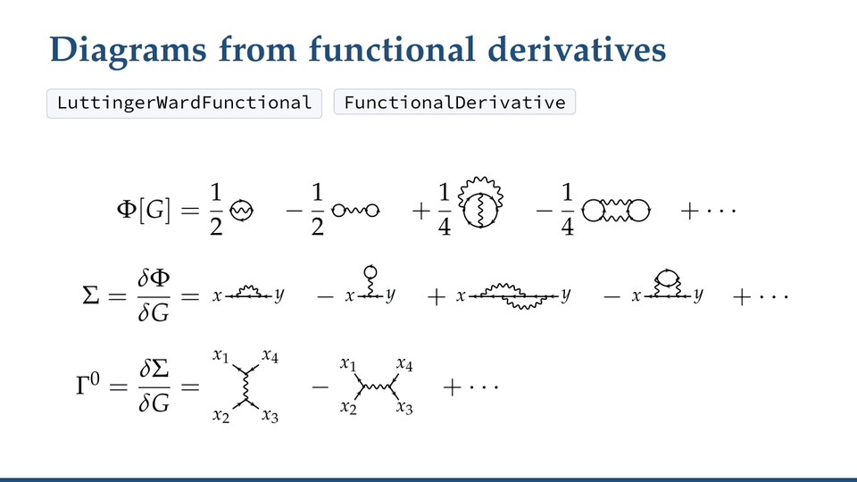

FunctionalDiagrams
Feynman diagrams from functional derivatives — a Mathematica package for perturbation theory, effective actions and many-body physics
RepositoryREADME, installation, source
Latest releasethe paclet to install
Showcasewhat the package does, step by step (PDF)
Manualevery function, with examples (PDF)
Map of the functionsinteractive, with every dependency
Demo videounder 40 seconds
